QC, integration, annotation all DCM samples
GinoBonazza (ginoandrea.bonazza@usz.ch)
25 February, 2026
Last updated: 2026-02-25
Checks: 7 0
Knit directory: DCM_snRNAseq/
This reproducible R Markdown analysis was created with workflowr (version 1.7.2). The Checks tab describes the reproducibility checks that were applied when the results were created. The Past versions tab lists the development history.
Great! Since the R Markdown file has been committed to the Git repository, you know the exact version of the code that produced these results.
Great job! The global environment was empty. Objects defined in the global environment can affect the analysis in your R Markdown file in unknown ways. For reproduciblity it’s best to always run the code in an empty environment.
The command set.seed(20240606) was run prior to running
the code in the R Markdown file. Setting a seed ensures that any results
that rely on randomness, e.g. subsampling or permutations, are
reproducible.
Great job! Recording the operating system, R version, and package versions is critical for reproducibility.
Nice! There were no cached chunks for this analysis, so you can be confident that you successfully produced the results during this run.
Great job! Using relative paths to the files within your workflowr project makes it easier to run your code on other machines.
Great! You are using Git for version control. Tracking code development and connecting the code version to the results is critical for reproducibility.
The results in this page were generated with repository version 71bccf9. See the Past versions tab to see a history of the changes made to the R Markdown and HTML files.
Note that you need to be careful to ensure that all relevant files for
the analysis have been committed to Git prior to generating the results
(you can use wflow_publish or
wflow_git_commit). workflowr only checks the R Markdown
file, but you know if there are other scripts or data files that it
depends on. Below is the status of the Git repository when the results
were generated:
Ignored files:
Ignored: .Rhistory
Ignored: .Rproj.user/
Ignored: output/CellChat/
Ignored: output/Cell_cell_communication_Macrophages/
Ignored: output/Chaffin_2022/
Ignored: output/Comparison_RV_bulk_RNAseq/
Ignored: output/Koenig_2022/
Ignored: output/SSc_PAH/
Ignored: output/Variance_partitioning/
Untracked files:
Untracked: .Rprofile
Untracked: Chaffin_wilcox.csv
Untracked: GRCh38-2020-A_build/
Untracked: Koenig_wilcox.csv
Untracked: Pseudobulk_all.csv
Untracked: Pseudobulk_byCellType_wilcox.csv
Untracked: analysis/Chaffin_2022.Rmd
Untracked: analysis/Check_IMC_panel.Rmd
Untracked: analysis/Comparison_RV_bulk_RNAseq.Rmd
Untracked: analysis/DE_Fibrosis_fibroblasts.Rmd
Untracked: analysis/DE_Group_all_cell_types.Rmd
Untracked: analysis/EC_capillary_angiogenic_boxplot_stats.csv
Untracked: analysis/Endothelial_cells_SGLT2_I.Rmd
Untracked: analysis/Fibroblasts_DA_DE_26.Rmd
Untracked: analysis/Genes_Luxembourg.Rmd
Untracked: analysis/HC_DEGs_clustering.Rmd
Untracked: analysis/Koenig_2022.Rmd
Untracked: analysis/Lymphocytes_subclustering.Rmd
Untracked: analysis/Macrophages_subclustering.Rmd
Untracked: analysis/Mass_Spec_RV_dysf.Rmd
Untracked: analysis/Mural_cells_subclustering.Rmd
Untracked: analysis/Olink_RV_dysf.Rmd
Untracked: analysis/Olink_SSc_PAH.Rmd
Untracked: analysis/Olink_SSc_PAH_draft.Rmd
Untracked: analysis/Pseudobulk_all.csv
Untracked: analysis/Pseudobulk_byCellType_facetGrid.pdf
Untracked: analysis/Pseudobulk_byCellType_filtered_wrap3col.pdf
Untracked: analysis/Pseudobulk_byCellType_filtered_wrap3col_proportional.pdf
Untracked: analysis/Pseudobulk_byCellType_wilcox.csv
Untracked: analysis/Pseudobulk_byCellType_wilcox.filtered.csv
Untracked: analysis/Reichart_ncRNA.Rmd
Untracked: analysis/Reichart_wilcox.csv
Untracked: analysis/Selection_genes_histology.Rmd
Untracked: analysis/TOM/
Untracked: analysis/UntitledR.R
Untracked: analysis/VennDiagram.2024-09-16_14-12-56.160498.log
Untracked: analysis/VennDiagram.2024-09-16_14-13-17.340014.log
Untracked: analysis/VennDiagram.2024-09-16_14-13-57.942673.log
Untracked: analysis/VennDiagram.2024-09-16_14-22-50.621507.log
Untracked: analysis/VennDiagram.2024-09-16_14-24-47.010131.log
Untracked: analysis/VennDiagram.2024-09-18_11-22-29.278827.log
Untracked: analysis/VennDiagram.2025-03-25_17-41-35.50458.log
Untracked: analysis/VennDiagram.2025-03-25_17-41-41.199096.log
Untracked: analysis/VennDiagram.2025-03-25_17-41-59.64245.log
Untracked: analysis/VennDiagram.2025-03-25_17-45-11.922474.log
Untracked: analysis/VennDiagram.2025-03-25_17-50-36.483812.log
Untracked: analysis/VennDiagram.2025-03-25_17-56-46.244322.log
Untracked: analysis/VennDiagram.2025-03-25_17-58-30.74362.log
Untracked: analysis/VennDiagram.2025-03-26_15-54-09.244636.log
Untracked: analysis/VennDiagram.2025-06-11_14-53-30.499963.log
Untracked: analysis/ec_Reichart_logCPM.csv
Untracked: analysis/omnipathr-log/
Untracked: code/Add_metadata.R
Untracked: code/Check DYSF.R
Untracked: code/Clustering_genes.R
Untracked: code/DE_5_percent.Rmd
Untracked: code/DE_5_percent.html
Untracked: code/DE_5_percent/
Untracked: code/DE_CM_test1.R
Untracked: code/DE_no_401.Rmd
Untracked: code/DE_no_401.html
Untracked: code/DE_no_401/
Untracked: code/Differential abundance test1.R
Untracked: code/Differential_Expression_edgeR_All.Rmd
Untracked: code/Differential_Expression_edgeR_All_2.Rmd
Untracked: code/Differential_Expression_edgeR_All_2.html
Untracked: code/Differential_Expression_edgeR_All_Age.Rmd
Untracked: code/Differential_Expression_edgeR_All_Age_2.Rmd
Untracked: code/Differential_Expression_edgeR_All_Age_2.html
Untracked: code/Differential_Expression_edgeR_All_groups.Rmd
Untracked: code/Differential_Expression_edgeR_All_groups.html
Untracked: code/Differential_Expression_edgeR_All_groups_2.Rmd
Untracked: code/Differential_Expression_edgeR_All_groups_2.html
Untracked: code/Differential_Expression_edgeR_All_groups_3.Rmd
Untracked: code/Differential_Expression_edgeR_All_groups_3.html
Untracked: code/PCA and CCA analysis test.R
Untracked: code/Pseudobulk DCM HC.R
Untracked: code/Published_heart_datasets_RV_vs_LV.Rmd
Untracked: code/QC_integration_annotation_orig.Rmd
Untracked: code/Removed_chunks.Rmd
Untracked: code/UpSet_plot_DEGs.Rmd
Untracked: code/Volcano_highlighted_genes.R
Untracked: code/ezInteractiveTable.Rmd
Untracked: code/ezInteractiveTable.html
Untracked: code/old.R
Untracked: data/Cellbender_output/
Untracked: data/Cellranger_output/
Untracked: data/DCM_Clinical_data_22.xlsx
Untracked: data/DCM_Clinical_data_26.xlsx
Untracked: data/DCM_Clinical_data_30.xlsx
Untracked: data/HMEC_RNAseq/
Untracked: data/Heart_datasets/
Untracked: data/Heart_specific_proteome.xlsx
Untracked: data/Homo_sapiens.GRCh38.93.gtf
Untracked: data/Human_plasma_proteome.xlsx
Untracked: data/Massons_quantification.xlsx
Untracked: data/Published_datasets/
Untracked: data/Raw/
Untracked: data/SSc-PAH/
Untracked: data/gencode.v46.chr_patch_hapl_scaff.annotation.gtf
Untracked: data/gencode.v46.chr_patch_hapl_scaff.basic.annotation.gtf
Untracked: data/refdata-gex-GRCh38-2020-A/
Untracked: omnipathr-log/
Untracked: output/Biomarkers_selection/
Untracked: output/CM_lncRNAs/
Untracked: output/Cardiomyocytes_DA_DE/
Untracked: output/Cardiomyocytes_subclustering/
Untracked: output/Cardiomyocytes_subclustering_26/
Untracked: output/Cell_cell_communication/
Untracked: output/Cell_cell_communication_LV/
Untracked: output/Cell_cell_communication_LV2/
Untracked: output/Cell_cycle/
Untracked: output/Check_IMC_panel/
Untracked: output/Comparison_LV/
Untracked: output/DA_DE_all_cell_types_and_parameters/
Untracked: output/DE_Fibrosis_all_cell_types/
Untracked: output/DE_Fibrosis_fibroblasts/
Untracked: output/DE_Group_all_cell_types/
Untracked: output/DE_all_cell_types_mPAP/
Untracked: output/DE_mPAP_all_cell_types/
Untracked: output/Differential_expression_edgeR_All/
Untracked: output/Differential_expression_edgeR_All_Age/
Untracked: output/Dysferlin/
Untracked: output/Endothelial_cells_Koenig_Reichart/
Untracked: output/Endothelial_cells_SGLT2_I/
Untracked: output/Endothelial_cells_published_datasets/
Untracked: output/Endothelial_cells_subclustering/
Untracked: output/Fibroblasts_DA_DE_26/
Untracked: output/Fibroblasts_subclustering/
Untracked: output/Figures_manuscript/
Untracked: output/Genes_Luxembourg/
Untracked: output/HC_DEGs_clustering/
Untracked: output/HMEC/
Untracked: output/LV_Klaudia/
Untracked: output/LV_datasets_DCM_vs_HC/
Untracked: output/Lymphocytes_subclustering/
Untracked: output/Macrophages_subclustering/
Untracked: output/Mass_Spec_RV_dysf/
Untracked: output/Mural_cells_subclustering/
Untracked: output/Olink_RV_dysf/
Untracked: output/Olink_SSc_PAH/
Untracked: output/Olink_SSc_PAH_draft/
Untracked: output/QC_integration_annotation/
Untracked: output/Reichart2022_ventricle_specificity_noncoding/
Untracked: output/Reichart_DE_DCMvsHC/
Untracked: output/Selection_genes_histology/
Untracked: output/UntitledR.R
Untracked: redsfewfref.R
Untracked: reference_sources/
Untracked: renv.lock
Untracked: renv/
Unstaged changes:
Modified: analysis/CM_lncRNAs.Rmd
Modified: analysis/Cardiomyocytes_DA_DE.Rmd
Modified: analysis/Cell_cycle.Rmd
Modified: analysis/Comparison_LV.Rmd
Modified: analysis/DE_Fibrosis_all_cell_types.Rmd
Deleted: analysis/Differential_Expression_edgeR_All.Rmd
Deleted: analysis/Differential_Expression_edgeR_All_Age.Rmd
Modified: analysis/Endothelial_cells_published_datasets.rmd
Modified: analysis/Endothelial_cells_subclustering.Rmd
Modified: analysis/Figures_manuscript.Rmd
Modified: analysis/Genes_Luxembourg_2.Rmd
Modified: analysis/HMEC.Rmd
Modified: analysis/LV_Klaudia.Rmd
Modified: analysis/Reichart_DE_DCMvsHC.Rmd
Modified: analysis/SSc_PAH.Rmd
Modified: analysis/_site.yml
Note that any generated files, e.g. HTML, png, CSS, etc., are not included in this status report because it is ok for generated content to have uncommitted changes.
These are the previous versions of the repository in which changes were
made to the R Markdown
(analysis/QC_integration_annotation.Rmd) and HTML
(docs/QC_integration_annotation.html) files. If you’ve
configured a remote Git repository (see ?wflow_git_remote),
click on the hyperlinks in the table below to view the files as they
were in that past version.
| File | Version | Author | Date | Message |
|---|---|---|---|---|
| Rmd | 71bccf9 | GinoBonazza | 2026-02-25 | wflow_publish(c("analysis/about.Rmd", "analysis/index.Rmd", "analysis/license.Rmd", |
| html | 0d3c5f9 | GinoBonazza | 2026-02-16 | Build site. |
| Rmd | 9c7d259 | GinoBonazza | 2026-02-16 | wflow_publish("analysis/QC_integration_annotation.Rmd") |
| html | 79a2b63 | GinoBonazza | 2025-10-17 | Build site. |
| Rmd | 893bed7 | GinoBonazza | 2025-10-17 | wflow_publish("analysis/QC_integration_annotation.Rmd", verbose = TRUE) |
| Rmd | 69919a0 | GinoBonazza | 2025-05-12 | wflow_rename("analysis/QC_integration_annotation_26.Rmd", "analysis/QC_integration_annotation.Rmd") |
| html | 69919a0 | GinoBonazza | 2025-05-12 | wflow_rename("analysis/QC_integration_annotation_26.Rmd", "analysis/QC_integration_annotation.Rmd") |
| Rmd | 95b934d | GinoBonazza | 2025-05-12 | wflow_remove("analysis/QC_integration_annotation.Rmd") |
| html | 95b934d | GinoBonazza | 2025-05-12 | wflow_remove("analysis/QC_integration_annotation.Rmd") |
| html | 4eab771 | GinoBonazza | 2024-07-01 | Build site. |
| Rmd | 2bc8aed | GinoBonazza | 2024-07-01 | Publish DCM_snRNAseq QC_integration_annotation |
| html | 93bef95 | GinoBonazza | 2024-06-29 | Build site. |
| Rmd | 7d9ce2b | GinoBonazza | 2024-06-29 | wflow_publish("analysis/QC_integration_annotation.Rmd") |
Setup
# Get current file name to make folder
current_file <- "QC_integration_annotation"
# Load libraries
library(here)
library(readr)
library(readxl)
library(Seurat)
library(DropletUtils)
library(Matrix)
library(scDblFinder)
library(scCustomize)
library(dplyr)
library(ggplot2)
library(magrittr)
library(tidyverse)
library(reshape2)
library(S4Vectors)
library(SingleCellExperiment)
library(pheatmap)
library(png)
library(gridExtra)
library(knitr)
library(scales)
library(RColorBrewer)
library(Matrix.utils)
library(tibble)
library(ggplot2)
library(scater)
library(patchwork)
library(statmod)
library(clustree)
library(harmony)
library(speckle)
#Output paths
output_dir_data <- here::here("output", current_file)
if (!dir.exists(output_dir_data)) dir.create(output_dir_data)
if (!dir.exists(here::here("docs", "figure"))) dir.create(here::here("docs", "figure"))
output_dir_figs <- here::here("docs", "figure", paste0(current_file, ".Rmd"))
if (!dir.exists(output_dir_figs)) dir.create(output_dir_figs)Quality Control
Load and merge cellbender and cellranger output
cell_bender_merged <- Read_CellBender_h5_Multi_File(merge = TRUE,
data_dir = here::here("data", "Cellbender_output"),
custom_name = "_filtered.h5",
sample_list = c("cellbender_output_319801_1-337PK",
"cellbender_output_319801_2-357PK",
"cellbender_output_319801_3-345PK",
"cellbender_output_323041_1-369PK",
"cellbender_output_323041_2-375PK",
"cellbender_output_323041_3-385PK",
"cellbender_output_327451_1-401PK",
"cellbender_output_327451_2-403PK",
"cellbender_output_327451_3-415PK",
"cellbender_output_330241_1-437PK",
"cellbender_output_330241_2-439PK",
"cellbender_output_330241_3-461PK",
"cellbender_output_330241_4-441PK_reprocessed",
"cellbender_output_330241_5-463PK",
"cellbender_output_351071_1-213PK",
"cellbender_output_351071_2-229PK",
"cellbender_output_351071_3-P3",
"cellbender_output_351071_4-P8",
"cellbender_output_352751_1-153PK",
"cellbender_output_352751_2-211PK",
"cellbender_output_352751_3-323PK",
"cellbender_output_352751_4-P5"
),
sample_names = c("PK337",
"PK357",
"PK345",
"PK369",
"PK375",
"PK385",
"PK401",
"PK403",
"PK415",
"PK437",
"PK439",
"PK461",
"PK441",
"PK463",
"PK213",
"PK229",
"P3",
"P8",
"PK153",
"PK211",
"PK323",
"P5")
)
cell_ranger_merged <- Read10X_h5_GEO(merge = TRUE,
data_dir = here::here("data", "Cellranger_output"),
shared_suffix = "_filtered_feature_bc_matrix.h5",
sample_list = c("319801_1-337PK",
"319801_2-357PK",
"319801_3-345PK",
"323041_1-369PK",
"323041_2-375PK",
"323041_3-385PK",
"327451_1-401PK",
"327451_2-403PK",
"327451_3-415PK",
"330241_1-437PK",
"330241_2-439PK",
"330241_3-461PK",
"330241_4-441PK_reprocessed",
"330241_5-463PK",
"351071_1-213PK",
"351071_2-229PK",
"351071_3-P3",
"351071_4-P8",
"352751_1-153PK",
"352751_2-211PK",
"352751_3-323PK",
"352751_4-P5"),
sample_names = c("PK337",
"PK357",
"PK345",
"PK369",
"PK375",
"PK385",
"PK401",
"PK403",
"PK415",
"PK437",
"PK439",
"PK461",
"PK441",
"PK463",
"PK213",
"PK229",
"P3",
"P8",
"PK153",
"PK211",
"PK323",
"P5")
)
DCM_RV_preQC <- Create_CellBender_Merged_Seurat(raw_cell_bender_matrix = cell_bender_merged,
raw_counts_matrix = cell_ranger_merged,
raw_assay_name = "RAW",
cell_bender_assay_name = "RNA")
rm(cell_bender_merged, cell_ranger_merged)Add metadata: percentage of mitochondrial and ribosomal genes, clinical data
DCM_RV_preQC[["percent.mt"]] <- PercentageFeatureSet(DCM_RV_preQC, pattern = "^MT-")
DCM_RV_preQC[["percent.rp"]] <- PercentageFeatureSet(DCM_RV_preQC, pattern = "^RP[SL]")
DCM_RV_preQC$Sample <- DCM_RV_preQC$orig.ident
Clinical_data <- read_excel(here::here("data", "DCM_Clinical_data_22.xlsx"))
add_metadata <- left_join(DCM_RV_preQC[["Sample"]], Clinical_data)
row.names(add_metadata) <- row.names(DCM_RV_preQC[[]])
DCM_RV_preQC <- AddMetaData(DCM_RV_preQC, metadata = add_metadata)
rm(add_metadata, Clinical_data)
metadata <- unique(subset(DCM_RV_preQC@meta.data, select = c(orig.ident, Sample:length(DCM_RV_preQC@meta.data))))
rownames(metadata) <- metadata$orig.ident
metadata orig.ident Sample Batch_processing Batch_sequencing Age_years Sex Group
PK337 PK337 PK337 Batch1 Batch1_seq 32 M DCM
PK357 PK357 PK357 Batch1 Batch1_seq 61 M DCM
PK345 PK345 PK345 Batch1 Batch1_seq 29 M DCM
PK369 PK369 PK369 Batch2 Batch2_seq 56 M DCM
PK375 PK375 PK375 Batch2 Batch2_seq 53 M DCM
PK385 PK385 PK385 Batch2 Batch2_seq 58 M DCM
PK401 PK401 PK401 Batch3 Batch3_seq 41 M DCM
PK403 PK403 PK403 Batch2 Batch3_seq 61 M DCM
PK415 PK415 PK415 Batch3 Batch3_seq 41 M DCM
PK437 PK437 PK437 Batch3 Batch4_seq 52 M DCM
PK439 PK439 PK439 Batch4 Batch4_seq 66 M DCM
PK461 PK461 PK461 Batch4 Batch4_seq 57 M DCM
PK441 PK441 PK441 Batch5 Batch4_seq 16 M DCM
PK463 PK463 PK463 Batch5 Batch4_seq 40 M DCM
PK213 PK213 PK213 Batch6 Batch5_seq 49 M DCM
PK229 PK229 PK229 Batch6 Batch5_seq 49 M DCM
P3 P3 P3 Batch6 Batch5_seq 19 M DCM
P8 P8 P8 Batch6 Batch5_seq 37 M DCM
PK153 PK153 PK153 Batch7 Batch6_seq 28 M DCM
PK211 PK211 PK211 Batch7 Batch6_seq 50 M DCM
PK323 PK323 PK323 Batch7 Batch6_seq 45 M DCM
P5 P5 P5 Batch7 Batch6_seq 36 M DCM
LVEF_percent LVID_mm LVEDD_mm RVID_mm TAPSE_mm RVIT_mm RAA_cm2 RVS_cm.s
PK337 16 62 67 44 16 43 25.0 8
PK357 15 71 71 48 15 48 26.7 9
PK345 15 88 88 49 17 49 NA 9
PK369 15 74 74 58 15 58 22.0 NA
PK375 18 82 82 33 20 33 15.0 8
PK385 10 84 84 60 17 60 NA 6
PK401 35 58 58 40 18 40 NA 7
PK403 6 83 83 47 15 47 NA 10
PK415 20 63 63 37 12 37 NA NA
PK437 20 89 89 41 22 41 32.0 7
PK439 23 69 69 46 19 46 25.0 NA
PK461 15 98 98 45 19 45 30.4 9
PK441 20 58 58 60 7 60 NA NA
PK463 17 80 81 57 15 57 27.3 7
PK213 10 86 92 54 9 NA 26.0 9
PK229 30 63 69 30 20 NA 23.0 11
P3 10 NA 76 39 13 NA 25.0 7
P8 10 NA 98 45 13 NA 30.0 6
PK153 18 NA 72 28 24 NA 12.0 NA
PK211 30 69 82 46 12 NA NA NA
PK323 15 69 75 39 12 NA 25.0 8
P5 15 74 80 41 9 NA 19.0 6
RVSP_mmHg sPAP_mmHg mPAP_mmHg PCW_mmHg PVR_WU TPG_mmHg CO_l.min
PK337 52 51 41 32 3.67 9 2.5
PK357 48 54 39 31 3.26 8 2.5
PK345 75 56 43 35 2.55 8 3.1
PK369 65 51 36 25 3.38 11 3.2
PK375 NA 31 21 9 2.05 12 5.9
PK385 42 45 29 20 2.42 9 3.7
PK401 NA 55 43 NA 5.80 NA 2.2
PK403 47 44 30 21 2.50 9 3.6
PK415 NA NA NA NA NA NA NA
PK437 60 42 29 17 2.40 12 5.0
PK439 30 26 19 10 2.37 9 3.4
PK461 40 41 34 28 2.27 6 2.6
PK441 NA NA NA NA NA NA NA
PK463 45 58 48 33 3.90 15 3.8
PK213 61 48 33 20 4.80 13 2.7
PK229 33 33 22 15 1.39 7 5.0
P3 35 NA NA NA NA NA NA
P8 28 37 26 20 1.50 6 4.0
PK153 37 41 27 23 1.27 4 3.1
PK211 NA 62 31 23 1.91 8 NA
PK323 41 38 30 18 2.20 12 5.4
P5 24 35 25 22 0.68 3 4.4Check how much Cellbender has affected the dataset
table(DCM_RV_preQC$Sample)
P3 P5 P8 PK153 PK211 PK213 PK229 PK323 PK337 PK345 PK357 PK369 PK375
4603 9418 5202 3578 3731 8675 5834 10035 8293 7926 8341 10244 9637
PK385 PK401 PK403 PK415 PK437 PK439 PK441 PK461 PK463
10145 7223 8549 7614 9307 10060 8401 8166 7752 DCM_RV_preQC <- Add_CellBender_Diff(seurat_object = DCM_RV_preQC,
raw_assay_name = "RAW",
cell_bender_assay_name = "RNA")
median_stats <- Median_Stats(seurat_object = DCM_RV_preQC,
group_by_var = "orig.ident",
median_var = c("nCount_Diff", "nFeature_Diff"))
median_stats# A tibble: 23 × 5
orig.ident Median_nCount_RNA Median_nFeature_RNA Median_nCount_Diff
<fct> <dbl> <dbl> <dbl>
1 P3 6679 2681 120
2 P5 3965 1995 7
3 P8 5300 2232 111
4 PK153 8380 3078. 15
5 PK211 1457 992 5
6 PK213 3921 1893 113
7 PK229 4538. 2044. 160
8 PK323 5407 2443 12
9 PK337 7529 2670 713
10 PK345 6564 2558. 690
# ℹ 13 more rows
# ℹ 1 more variable: Median_nFeature_Diff <dbl>feature_diff <- CellBender_Feature_Diff(seurat_object = DCM_RV_preQC,
raw_assay = "RAW",
cell_bender_assay = "RNA")
head(feature_diff) Raw_Counts CellBender_Counts Count_Diff Pct_Diff
AC092490.2 1847 231 1616 87.49323
NEUROD1 388 59 329 84.79381
LINC00558 1203 231 972 80.79800
POTEG 539 111 428 79.40631
IZUMO3 186 44 142 76.34409
AL591888.1 388 94 294 75.77320CellBender_Diff_Plot(feature_diff_df = feature_diff)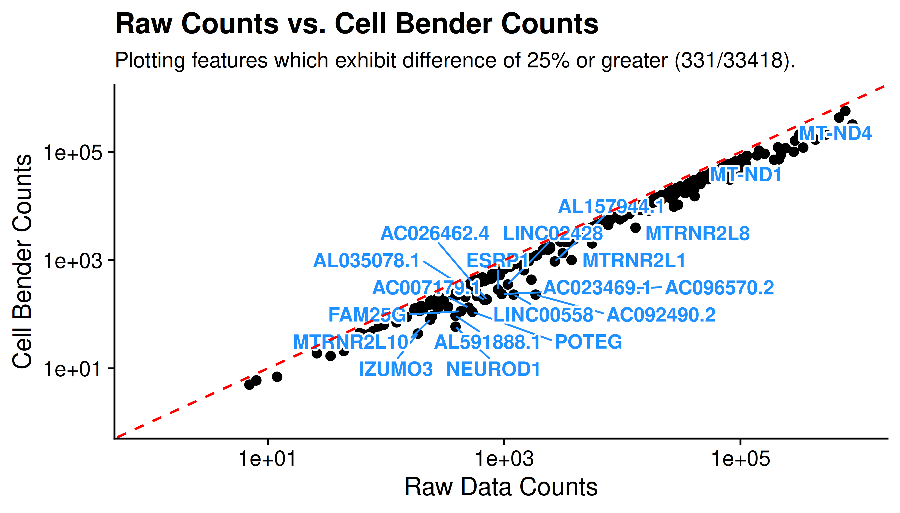
Check quality control parameters
p1 <- VlnPlot(DCM_RV_preQC, features = "nCount_RNA", group.by = "Sample", pt.size = 0) + theme(axis.title.x = element_blank()) + NoLegend()
p2 <- VlnPlot(DCM_RV_preQC, features = "nFeature_RNA", group.by = "Sample", pt.size = 0) + theme(axis.title.x = element_blank()) + NoLegend()
p3 <- VlnPlot(DCM_RV_preQC, features = "percent.mt", group.by = "Sample", pt.size = 0) + theme(axis.title.x = element_blank()) + NoLegend()
p4 <- VlnPlot(DCM_RV_preQC, features = "percent.rp", group.by = "Sample", pt.size = 0) + theme(axis.title.x = element_blank()) + NoLegend()
QC_pre_VlnPlots <- p1 + p2 + p3 + p4 + plot_layout(ncol = 2)
QC_pre_VlnPlots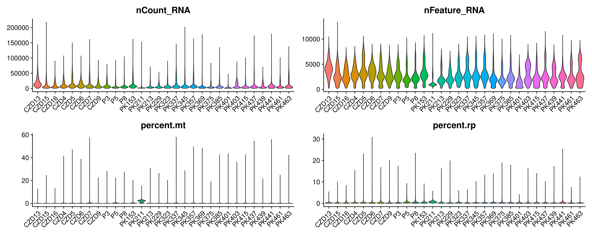
p1 <- VlnPlot(DCM_RV_preQC, features = "nCount_RNA", group.by = "Sample", pt.size = 0, y.max = 20000) + theme(axis.title.x = element_blank()) + NoLegend()
p2 <- VlnPlot(DCM_RV_preQC, features = "nFeature_RNA", group.by = "Sample", pt.size = 0, y.max = 10000) + theme(axis.title.x = element_blank()) + NoLegend()
p3 <- VlnPlot(DCM_RV_preQC, features = "percent.mt", group.by = "Sample", pt.size = 0, y.max = 5) + theme(axis.title.x = element_blank()) + NoLegend()
p4 <- VlnPlot(DCM_RV_preQC, features = "percent.rp", group.by = "Sample", pt.size = 0, y.max = 5) + theme(axis.title.x = element_blank()) + NoLegend()
QC_pre_VlnPlots_zoom <- p1 + p2 + p3 + p4 + plot_layout(ncol = 2)
QC_pre_VlnPlots_zoom
Doublets detection
DCM_RV_preQC_sce <- as.SingleCellExperiment(DCM_RV_preQC)
DCM_RV_preQC_sce <- scDblFinder(DCM_RV_preQC_sce, samples="Sample", clusters = TRUE) | | | 0% | |=== | 5% | |====== | 9% | |========== | 14% | |============= | 18% | |================ | 23% | |=================== | 27% | |====================== | 32% | |========================= | 36% | |============================= | 41% | |================================ | 45% | |=================================== | 50% | |====================================== | 55% | |========================================= | 59% | |============================================= | 64% | |================================================ | 68% | |=================================================== | 73% | |====================================================== | 77% | |========================================================= | 82% | |============================================================ | 86% | |================================================================ | 91% | |=================================================================== | 95% | |======================================================================| 100%table(DCM_RV_preQC_sce@colData$scDblFinder.class)
singlet doublet
155993 16741 DCM_RV_preQC <- as.Seurat(DCM_RV_preQC_sce, counts = "counts", data = "logcounts")
rm(DCM_RV_preQC_sce)
DCM_RV_preQC@meta.data[DCM_RV_preQC@meta.data$scDblFinder.class %in% "singlet", "scDblFinder.n"] = paste0("Singlets (n=", table(DCM_RV_preQC$scDblFinder.class)[1], ")")
DCM_RV_preQC@meta.data[DCM_RV_preQC@meta.data$scDblFinder.class %in% "doublet", "scDblFinder.n"] = paste0("Doublets (n=", table(DCM_RV_preQC$scDblFinder.class)[2], ")")
DCM_RV_preQC$scDblFinder.n <- factor(x = DCM_RV_preQC$scDblFinder.n, levels = c(rownames(table(DCM_RV_preQC$scDblFinder.n))[2], rownames(table(DCM_RV_preQC$scDblFinder.n))[1])) p1 <- VlnPlot(DCM_RV_preQC, features = c("nCount_RNA"), split.by = "scDblFinder.n", group.by = "Sample", pt.size = 0, y.max = 50000) + theme(axis.title.x = element_blank()) + NoLegend()
p2 <- VlnPlot(DCM_RV_preQC, features = c("nFeature_RNA"), split.by = "scDblFinder.n", group.by = "Sample", pt.size = 0, y.max = 10000) + theme(axis.title.x = element_blank())
QC_pre_Doublets <- p1 + p2 + plot_layout(ncol = 2)
QC_pre_Doublets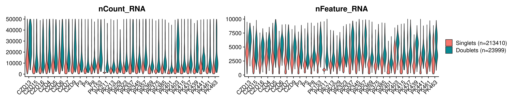
saveRDS(DCM_RV_preQC,
here::here(output_dir_data, "DCM_RV_preQC.rds"))DCM_RV_preQC <- readRDS(here::here(output_dir_data, "DCM_RV_preQC.rds"))Remove doublets
DCM_RV <- subset(x = DCM_RV_preQC, subset = scDblFinder.class == "singlet")
table(DCM_RV@meta.data$scDblFinder.class)
singlet doublet
155993 0 rm(DCM_RV_preQC)
DCM_RV@assays[["RAW"]] <- NULL
DefaultAssay(DCM_RV) <- "RNA"Check quality control parameters after removing doublets
p1 <- VlnPlot(DCM_RV, features = "nCount_RNA", group.by = "Sample", pt.size = 0) + theme(axis.title.x = element_blank()) + NoLegend()
p2 <- VlnPlot(DCM_RV, features = "nFeature_RNA", group.by = "Sample", pt.size = 0) + theme(axis.title.x = element_blank()) + NoLegend()
p3 <- VlnPlot(DCM_RV, features = "percent.mt", group.by = "Sample", pt.size = 0) + theme(axis.title.x = element_blank()) + NoLegend()
p4 <- VlnPlot(DCM_RV, features = "percent.rp", group.by = "Sample", pt.size = 0) + theme(axis.title.x = element_blank()) + NoLegend()
QC_pre_no_doublets_VlnPlots <- p1 + p2 + p3 + p4 + plot_layout(ncol = 2)
QC_pre_no_doublets_VlnPlots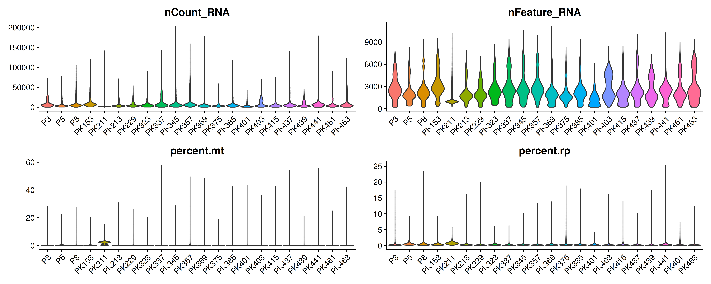
p1 <- VlnPlot(DCM_RV, features = "nCount_RNA", group.by = "Sample", pt.size = 0, y.max = 20000) + theme(axis.title.x = element_blank()) + NoLegend()
p2 <- VlnPlot(DCM_RV, features = "nFeature_RNA", group.by = "Sample", pt.size = 0, y.max = 10000) + theme(axis.title.x = element_blank()) + NoLegend()
p3 <- VlnPlot(DCM_RV, features = "percent.mt", group.by = "Sample", pt.size = 0, y.max = 1.5) + theme(axis.title.x = element_blank()) + NoLegend()
p4 <- VlnPlot(DCM_RV, features = "percent.rp", group.by = "Sample", pt.size = 0, y.max = 1.5) + theme(axis.title.x = element_blank()) + NoLegend()
QC_pre_no_doublets_VlnPlots_zoom <- p1 + p2 + p3 + p4 + plot_layout(ncol = 2)
QC_pre_no_doublets_VlnPlots_zoom
Filter based on number of counts, features and percentage of mitochondrial genes
DCM_RV <- subset(DCM_RV, subset =
nFeature_RNA > 500 &
percent.mt < 1.5 &
nCount_RNA > 1000 &
nCount_RNA < 100000)
table(DCM_RV$Sample)
P3 P5 P8 PK153 PK211 PK213 PK229 PK323 PK337 PK345 PK357 PK369 PK375
3832 7269 4370 3033 973 7298 4926 8087 6976 6739 7224 8168 8101
PK385 PK401 PK403 PK415 PK437 PK439 PK441 PK461 PK463
8343 4755 7357 5993 7670 8311 6492 6824 6588 Sample PK211 has a really low number of counts and features, too different compared to all other samples. Therefore it will be excluded from the analysis
DCM_RV <- subset(DCM_RV, subset =
Sample != "PK211")
table(DCM_RV$Sample)
P3 P5 P8 PK153 PK213 PK229 PK323 PK337 PK345 PK357 PK369 PK375 PK385
3832 7269 4370 3033 7298 4926 8087 6976 6739 7224 8168 8101 8343
PK401 PK403 PK415 PK437 PK439 PK441 PK461 PK463
4755 7357 5993 7670 8311 6492 6824 6588 cell_type_cols <- c("#d05050", "#33A02C", "#1F78B4", "#CAB2D6", "#FF7F00", "#B2DF8A", "#B15928", "#FFD000", "#FA95C0", "#FDBF6F", "#6A3D9A", "#7aCDF9", "#E6E600")
sample_cols <- DiscretePalette_scCustomize(num_colors = 29, palette = "polychrome", shuffle_pal = TRUE, seed = 220510)
batch_cols <- DiscretePalette_scCustomize(num_colors = 9, palette = "polychrome", shuffle_pal = TRUE, seed = 220510)
cluster_cols <- DiscretePalette_scCustomize(num_colors = 15, palette = "polychrome", shuffle_pal = TRUE, seed = 220510)PalettePlot(cell_type_cols) +
PalettePlot(sample_cols) +
PalettePlot(batch_cols) +
PalettePlot(cluster_cols)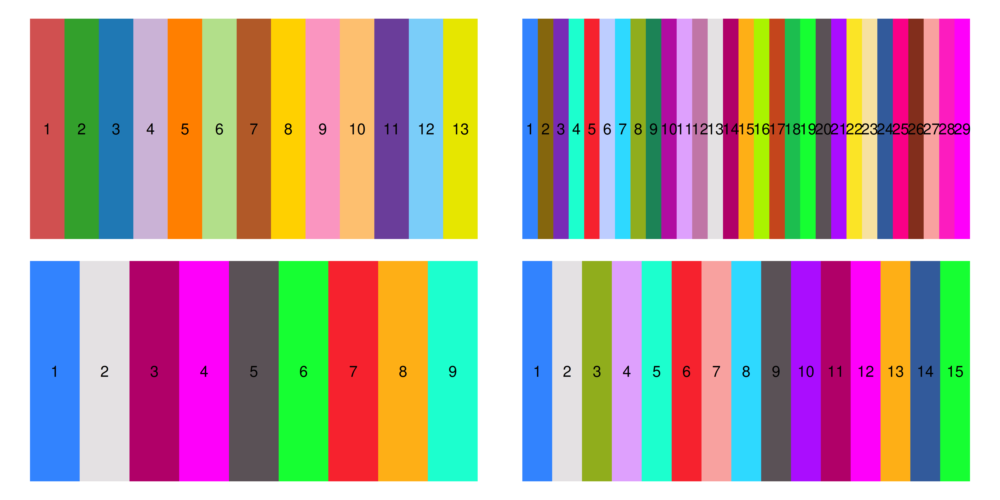
Check quality control parameters
p1 <- VlnPlot(DCM_RV, features = "nCount_RNA", group.by = "Sample", pt.size = 0) + theme(axis.title.x = element_blank()) + NoLegend()
p2 <- VlnPlot(DCM_RV, features = "nFeature_RNA", group.by = "Sample", pt.size = 0) + theme(axis.title.x = element_blank()) + NoLegend()
p3 <- VlnPlot(DCM_RV, features = "percent.mt", group.by = "Sample", pt.size = 0) + theme(axis.title.x = element_blank()) + NoLegend()
p4 <- VlnPlot(DCM_RV, features = "percent.rp", group.by = "Sample", pt.size = 0) + theme(axis.title.x = element_blank()) + NoLegend()
QC_post_VlnPlots <- p1 + p2 + p3 + p4 + plot_layout(ncol = 2)
QC_post_VlnPlots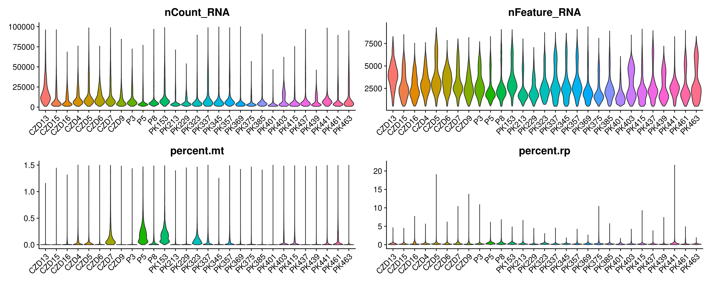
p1 <- VlnPlot(DCM_RV, features = "nCount_RNA", group.by = "Sample", pt.size = 0, y.max = 20000) + theme(axis.title.x = element_blank()) + NoLegend()
p2 <- VlnPlot(DCM_RV, features = "nFeature_RNA", group.by = "Sample", pt.size = 0, y.max = 10000) + theme(axis.title.x = element_blank()) + NoLegend()
p3 <- VlnPlot(DCM_RV, features = "percent.mt", group.by = "Sample", pt.size = 0, y.max = 1.5) + theme(axis.title.x = element_blank()) + NoLegend()
p4 <- VlnPlot(DCM_RV, features = "percent.rp", group.by = "Sample", pt.size = 0, y.max = 1.5) + theme(axis.title.x = element_blank()) + NoLegend()
QC_post_VlnPlots_zoom <- p1 + p2 + p3 + p4 + plot_layout(ncol = 2)
QC_post_VlnPlots_zoom
Integration and clustering
Normalization and scaling using SCTransform
DefaultAssay(DCM_RV) <- "RNA"
DCM_RV <- SplitObject(DCM_RV, split.by = "Sample")
for (i in 1:length(DCM_RV)) {
DCM_RV[[i]] <- SCTransform(DCM_RV[[i]],
vst.flavor = "v2",
vars.to.regress = c("percent.mt"),
return.only.var.genes = TRUE,
method = "glmGamPoi")
}PCA
features <- SelectIntegrationFeatures(object.list = DCM_RV, nfeatures = 3000)
DCM_RV <- merge(x = DCM_RV[[1]], y = DCM_RV[2:length(DCM_RV)], merge.data=TRUE)
VariableFeatures(DCM_RV) <- features
DCM_RV <- RunPCA(DCM_RV)ElbowPlot(DCM_RV, ndims = 50)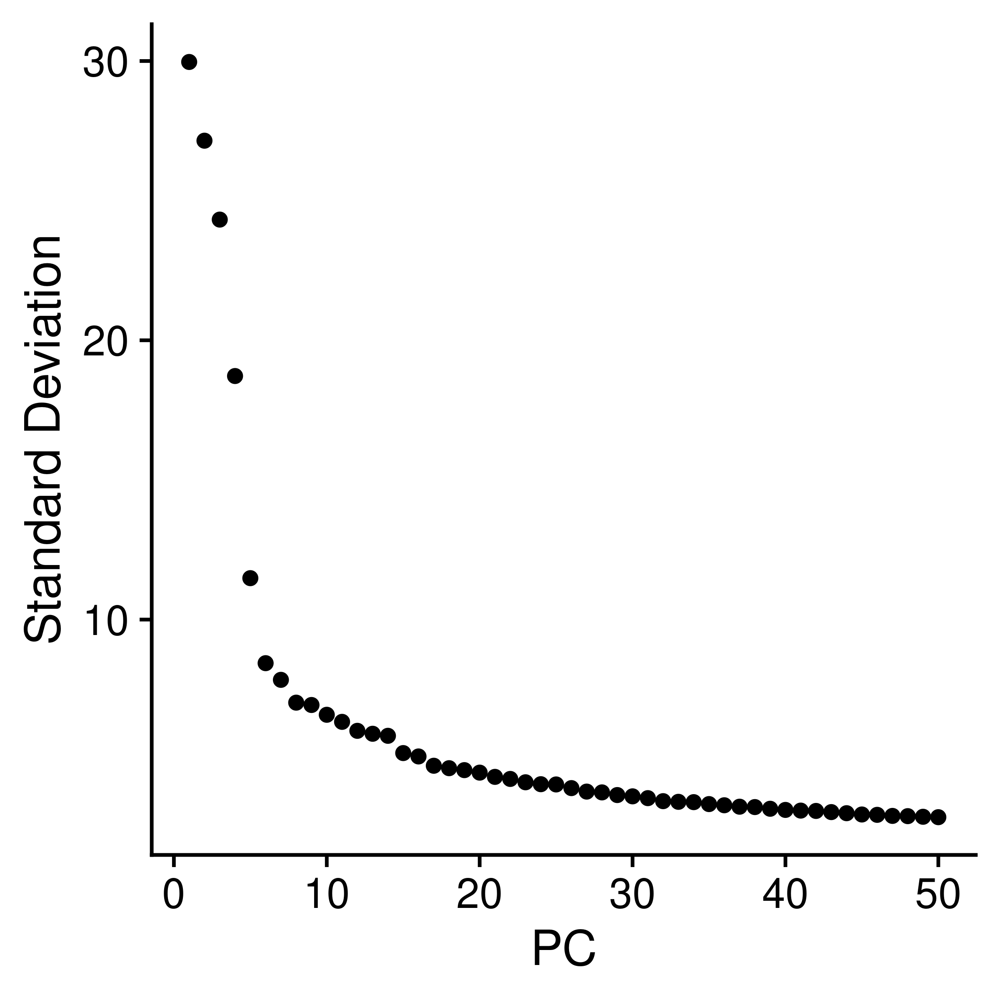
Clustering without integration
DCM_RV <- RunUMAP(DCM_RV, dims = 1:50)
DCM_RV <- FindNeighbors(DCM_RV, dims = 1:50)
DCM_RV <- FindClusters(DCM_RV, resolution = seq(0.1, 0.8, by=0.1))Modularity Optimizer version 1.3.0 by Ludo Waltman and Nees Jan van Eck
Number of nodes: 138356
Number of edges: 4464235
Running Louvain algorithm...
Maximum modularity in 10 random starts: 0.9843
Number of communities: 17
Elapsed time: 47 seconds
Modularity Optimizer version 1.3.0 by Ludo Waltman and Nees Jan van Eck
Number of nodes: 138356
Number of edges: 4464235
Running Louvain algorithm...
Maximum modularity in 10 random starts: 0.9738
Number of communities: 23
Elapsed time: 42 seconds
Modularity Optimizer version 1.3.0 by Ludo Waltman and Nees Jan van Eck
Number of nodes: 138356
Number of edges: 4464235
Running Louvain algorithm...
Maximum modularity in 10 random starts: 0.9650
Number of communities: 27
Elapsed time: 41 seconds
Modularity Optimizer version 1.3.0 by Ludo Waltman and Nees Jan van Eck
Number of nodes: 138356
Number of edges: 4464235
Running Louvain algorithm...
Maximum modularity in 10 random starts: 0.9586
Number of communities: 30
Elapsed time: 39 seconds
Modularity Optimizer version 1.3.0 by Ludo Waltman and Nees Jan van Eck
Number of nodes: 138356
Number of edges: 4464235
Running Louvain algorithm...
Maximum modularity in 10 random starts: 0.9523
Number of communities: 32
Elapsed time: 38 seconds
Modularity Optimizer version 1.3.0 by Ludo Waltman and Nees Jan van Eck
Number of nodes: 138356
Number of edges: 4464235
Running Louvain algorithm...
Maximum modularity in 10 random starts: 0.9465
Number of communities: 33
Elapsed time: 37 seconds
Modularity Optimizer version 1.3.0 by Ludo Waltman and Nees Jan van Eck
Number of nodes: 138356
Number of edges: 4464235
Running Louvain algorithm...
Maximum modularity in 10 random starts: 0.9411
Number of communities: 35
Elapsed time: 37 seconds
Modularity Optimizer version 1.3.0 by Ludo Waltman and Nees Jan van Eck
Number of nodes: 138356
Number of edges: 4464235
Running Louvain algorithm...
Maximum modularity in 10 random starts: 0.9367
Number of communities: 39
Elapsed time: 38 secondsclustree::clustree(DCM_RV@meta.data[,grep("SCT_snn_res", colnames(DCM_RV@meta.data))],
prefix = "SCT_snn_res.")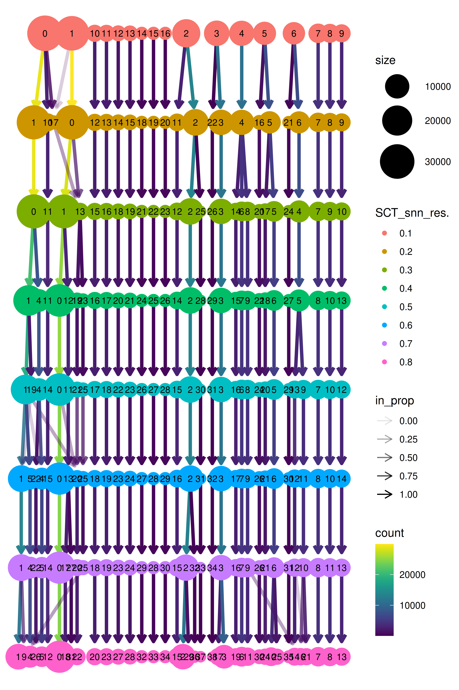
DimPlot(DCM_RV, reduction = "umap", shuffle = T,
group.by = c("SCT_snn_res.0.1", "Sample", "Batch_processing", "Batch_sequencing"), ncol = 2)
Integrate the samples
DCM_RV <- RunHarmony(DCM_RV,
assay.use="SCT",
group.by.vars = "Sample",
dims.use = 1:50,
plot_convergence=TRUE,
.options = harmony_options(
max.iter.cluster = 100,
)
)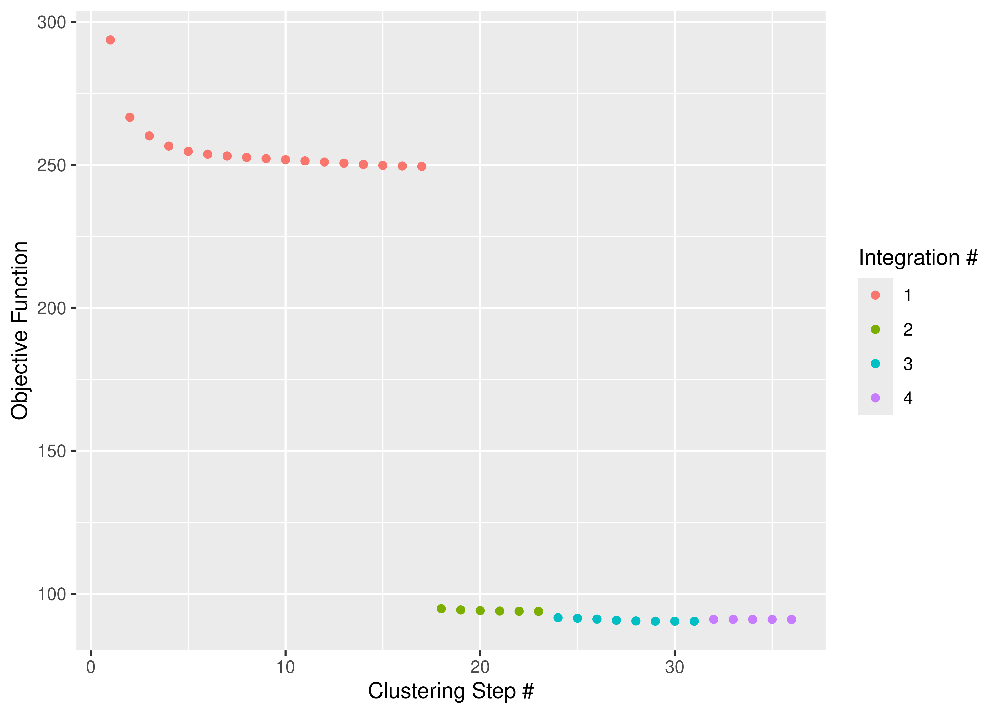
Clustering after integration
DefaultAssay(DCM_RV) <- "SCT"
DCM_RV <- RunUMAP(DCM_RV, dims = 1:50, reduction = "harmony")
DCM_RV <- FindNeighbors(DCM_RV, dims = 1:50, reduction = "harmony")
DCM_RV <- FindClusters(DCM_RV, resolution = seq(0.1, 0.8, by=0.1))Modularity Optimizer version 1.3.0 by Ludo Waltman and Nees Jan van Eck
Number of nodes: 138356
Number of edges: 4623170
Running Louvain algorithm...
Maximum modularity in 10 random starts: 0.9812
Number of communities: 17
Elapsed time: 48 secondsModularity Optimizer version 1.3.0 by Ludo Waltman and Nees Jan van Eck
Number of nodes: 138356
Number of edges: 4623170
Running Louvain algorithm...
Maximum modularity in 10 random starts: 0.9645
Number of communities: 20
Elapsed time: 47 secondsModularity Optimizer version 1.3.0 by Ludo Waltman and Nees Jan van Eck
Number of nodes: 138356
Number of edges: 4623170
Running Louvain algorithm...
Maximum modularity in 10 random starts: 0.9512
Number of communities: 21
Elapsed time: 49 secondsModularity Optimizer version 1.3.0 by Ludo Waltman and Nees Jan van Eck
Number of nodes: 138356
Number of edges: 4623170
Running Louvain algorithm...
Maximum modularity in 10 random starts: 0.9403
Number of communities: 23
Elapsed time: 49 secondsModularity Optimizer version 1.3.0 by Ludo Waltman and Nees Jan van Eck
Number of nodes: 138356
Number of edges: 4623170
Running Louvain algorithm...
Maximum modularity in 10 random starts: 0.9293
Number of communities: 24
Elapsed time: 52 secondsModularity Optimizer version 1.3.0 by Ludo Waltman and Nees Jan van Eck
Number of nodes: 138356
Number of edges: 4623170
Running Louvain algorithm...
Maximum modularity in 10 random starts: 0.9192
Number of communities: 26
Elapsed time: 51 secondsModularity Optimizer version 1.3.0 by Ludo Waltman and Nees Jan van Eck
Number of nodes: 138356
Number of edges: 4623170
Running Louvain algorithm...
Maximum modularity in 10 random starts: 0.9113
Number of communities: 29
Elapsed time: 52 secondsModularity Optimizer version 1.3.0 by Ludo Waltman and Nees Jan van Eck
Number of nodes: 138356
Number of edges: 4623170
Running Louvain algorithm...
Maximum modularity in 10 random starts: 0.9044
Number of communities: 29
Elapsed time: 49 secondsclustree::clustree(DCM_RV@meta.data[,grep("SCT_snn_res", colnames(DCM_RV@meta.data))],
prefix = "SCT_snn_res.")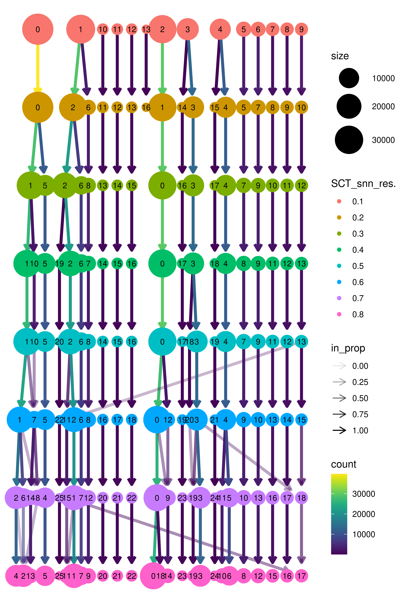
DCM_RV$SCT_snn_res.0.2 <- factor(DCM_RV$SCT_snn_res.0.2, levels = c("0", "1", "2", "3", "4", "5","6", "7", "8", "9", "10", "11", "12", "13", "14", "15", "16"))
DimPlot(DCM_RV, reduction = "umap", shuffle = T,
group.by = c("SCT_snn_res.0.2", "Sample", "Batch_processing", "Batch_sequencing"), ncol = 2, label=T)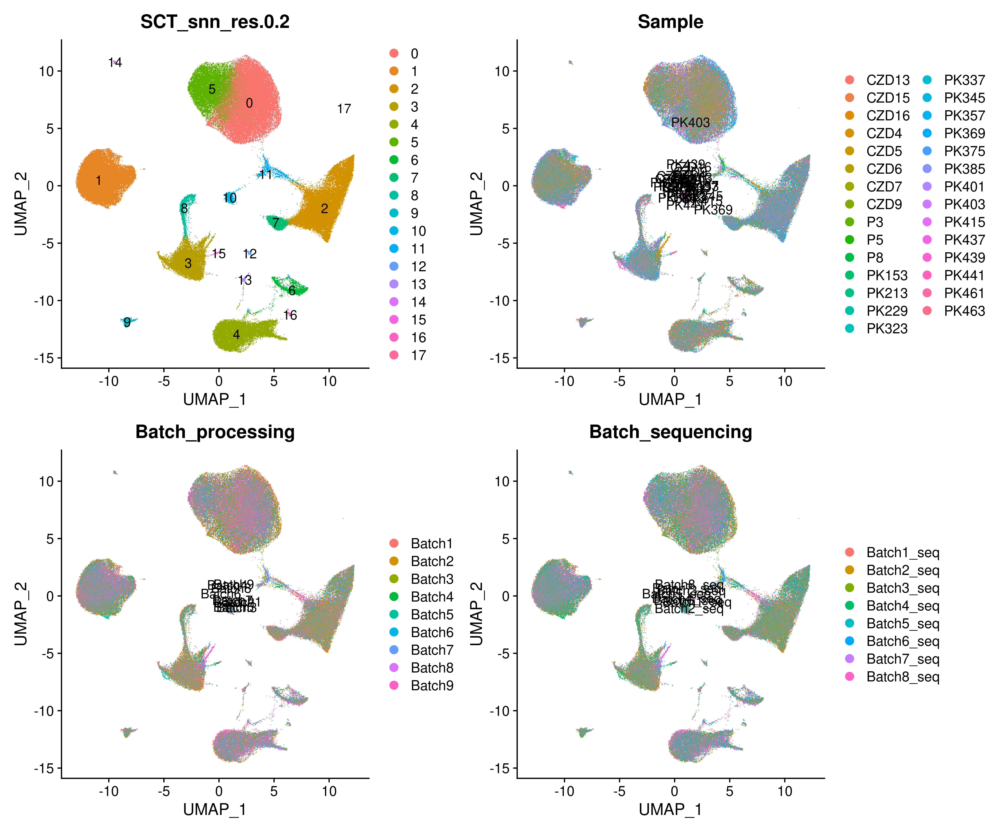
Find the markers that characterize each cell population
DefaultAssay(DCM_RV) <- "RNA"
DCM_RV <- NormalizeData(DCM_RV)
Idents(DCM_RV) <- "SCT_snn_res.0.2"
Markers <- FindAllMarkers(DCM_RV, only.pos = TRUE, min.pct = 0.5, logfc.threshold = 1)
write.csv(Markers, here::here(output_dir_data, "DCM_RV_Markers_all_low_quality.csv"))
Markers_top10 <- as.data.frame(Markers %>% group_by(cluster) %>% top_n(n = 10, wt = avg_log2FC))
write.csv(Markers_top10, here::here(output_dir_data, "DCM_RV_Markers_top10_low_quality.csv"))
Markers_top3 <- as.data.frame(Markers %>% group_by(cluster) %>% top_n(n = 3, wt = avg_log2FC))
write.csv(Markers_top3, here::here(output_dir_data, "DCM_RV_Markers_top3_low_quality.csv"))heatmap_cols <- colorRampPalette(RColorBrewer::brewer.pal(9,"RdBu"))(256)
heatmap_cols <- rev(heatmap_cols[1:256])
Heatmap <- DoHeatmap(subset(DCM_RV, cells = sample(colnames(DCM_RV), 20000)), label = FALSE, draw.line = F, features = Markers_top10$gene, assay = "SCT") +
scale_fill_gradientn(colours = heatmap_cols) +
theme(axis.text.y = element_text(size = 5)) +
theme(plot.margin = unit(c(0.1, 0, 0, 0),
"inches"))
Heatmap
Check QC parameters in each cluster
VlnPlot(DCM_RV, features = c("nCount_RNA", "nFeature_RNA", "percent.mt", "percent.rp", "scDblFinder.score"), ncol = 3, pt.size = 0) + theme(axis.title.x = element_blank())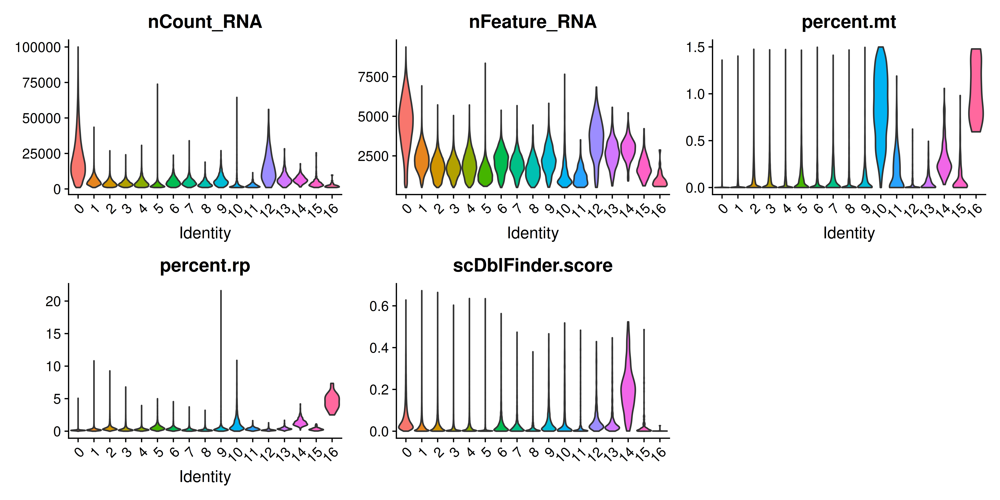
VlnPlot_scCustom(DCM_RV, features = dplyr::filter(Markers_top10, cluster == "10")$gene, num_columns = 5, pt.size = 0) + theme(axis.title.x = element_blank())
VlnPlot_scCustom(DCM_RV, features = dplyr::filter(Markers_top10, cluster == "14")$gene, num_columns = 5, pt.size = 0) + theme(axis.title.x = element_blank())
VlnPlot_scCustom(DCM_RV, features = dplyr::filter(Markers_top10, cluster == "16")$gene, num_columns = 5, pt.size = 0) + theme(axis.title.x = element_blank())
Remove low quality cells (clusters with low number of count and features and higher percentage of mt or rp genes)
DCM_RV <- subset(DCM_RV, subset = SCT_snn_res.0.2 %in% c("0", "1", "2", "3", "4", "5","6", "7", "8", "9", "11", "12", "13", "15"))saveRDS(DCM_RV,
here::here(output_dir_data, "DCM_RV.rds"))DCM_RV <- readRDS(here::here(output_dir_data, "DCM_RV.rds"))Reintegrate and recluster
DefaultAssay(DCM_RV) <- "SCT"
DCM_RV <- SplitObject(DCM_RV, split.by = "Sample")
features <- SelectIntegrationFeatures(object.list = DCM_RV, nfeatures = 3000)
DCM_RV <- merge(x = DCM_RV[[1]], y = DCM_RV[2:length(DCM_RV)], merge.data=TRUE)
VariableFeatures(DCM_RV) <- features
DCM_RV <- RunPCA(DCM_RV, npcs = 50)
ElbowPlot(DCM_RV, ndims = 50)
DCM_RV <- RunHarmony(DCM_RV,
assay.use="SCT",
group.by.vars = "Sample",
dims.use = 1:50,
plot_convergence=TRUE,
.options = harmony_options(
max.iter.cluster = 100,
)
)
DefaultAssay(DCM_RV) <- "SCT"
DCM_RV <- RunUMAP(DCM_RV, dims = 1:50, reduction = "harmony")
DCM_RV <- FindNeighbors(DCM_RV, dims = 1:50, reduction = "harmony")
DCM_RV <- FindClusters(DCM_RV, resolution = seq(0.1, 0.8, by=0.1))clustree::clustree(DCM_RV@meta.data[,grep("SCT_snn_res", colnames(DCM_RV@meta.data))],
prefix = "SCT_snn_res.")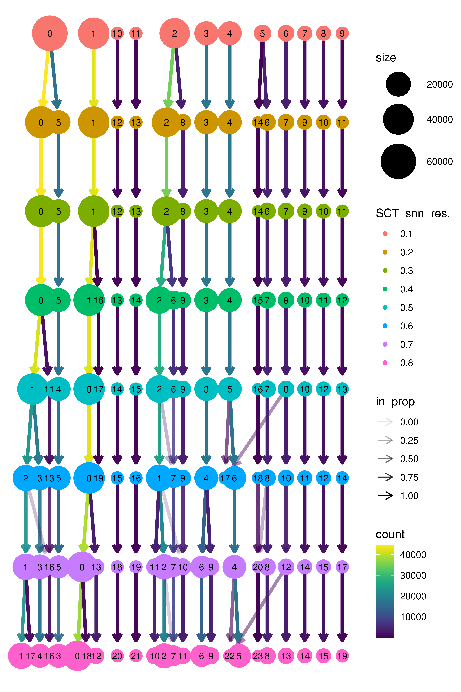
res_names <- sub("SCT_snn_res\\.", "", grep("SCT_snn_res", names(DCM_RV@meta.data), value = TRUE))
clustree_cols <- c("#8F7C00FF", "#5EF1F2FF", "#FFA8BBFF", "#F0A0FFFF", "#FFCC99FF", "#2BCE48FF", "#FFE100FF", "#9DCC00FF")
names(clustree_cols) <- res_names[seq_along(clustree_cols)]
clustree(
DCM_RV@meta.data[, grep("SCT_snn_res", names(DCM_RV@meta.data))],
prefix = "SCT_snn_res."
) +
scale_colour_manual(values = clustree_cols, name = "resolution") +
scale_fill_manual(values = clustree_cols, name = "resolution") 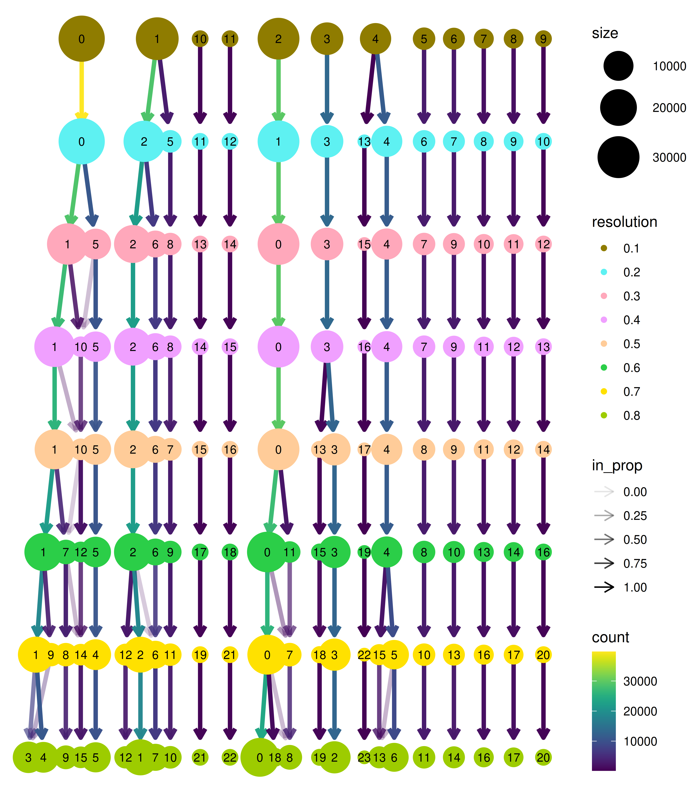
DCM_RV$SCT_snn_res.0.2 <- factor(DCM_RV$SCT_snn_res.0.2, levels = c("0", "1", "2", "3", "4", "5","6", "7", "8", "9", "10", "11", "12", "13"))
DimPlot(DCM_RV, reduction = "umap", shuffle = T,
group.by = c("SCT_snn_res.0.2", "Sample", "Batch_processing", "Batch_sequencing"), ncol = 2)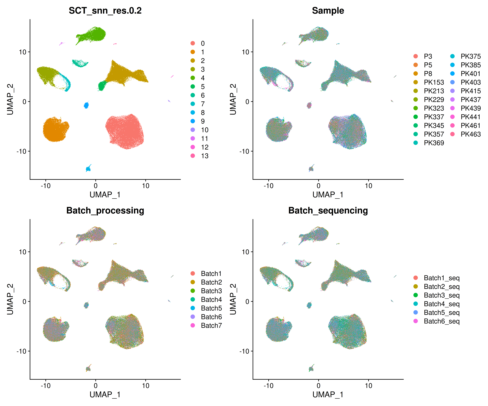
Find the markers that characterize each cell population
DefaultAssay(DCM_RV) <- "RNA"
Idents(DCM_RV) <- "SCT_snn_res.0.2"
Markers <- FindAllMarkers(DCM_RV, only.pos = TRUE, min.pct = 0.5, logfc.threshold = 1)
write.csv(Markers, here::here(output_dir_data, "DCM_RV_Markers_all.csv"))
Markers_top10 <- as.data.frame(Markers %>% group_by(cluster) %>% top_n(n = 10, wt = avg_log2FC))
write.csv(Markers_top10, here::here(output_dir_data, "DCM_RV_Markers_top10.csv"))
Markers_top3 <- as.data.frame(Markers %>% group_by(cluster) %>% top_n(n = 3, wt = avg_log2FC))
write.csv(Markers_top3, here::here(output_dir_data, "DCM_RV_Markers_top3.csv"))Check cell cycle genes
s.genes <- cc.genes$s.genes
g2m.genes <- cc.genes$g2m.genes
DCM_RV <- CellCycleScoring(DCM_RV, s.features = s.genes, g2m.features = g2m.genes)
DimPlot(DCM_RV, reduction = "umap", shuffle = T,
group.by = "Phase")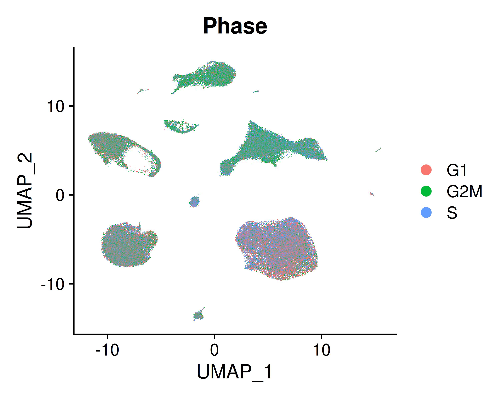
Cell type annotation
Annotate the clusters based on the characteristic markers
DCM_RV@meta.data[DCM_RV@meta.data$SCT_snn_res.0.2 %in% c("0"), "cell_type"] = "Cardiomyocytes"
DCM_RV@meta.data[DCM_RV@meta.data$SCT_snn_res.0.2 %in% c("1"), "cell_type"] = "Fibroblasts"
DCM_RV@meta.data[DCM_RV@meta.data$SCT_snn_res.0.2 %in% c("2", "5"), "cell_type"] = "Endothelial cells"
DCM_RV@meta.data[DCM_RV@meta.data$SCT_snn_res.0.2 %in% c("3"), "cell_type"] = "Pericytes"
DCM_RV@meta.data[DCM_RV@meta.data$SCT_snn_res.0.2 %in% c("4"), "cell_type"] = "Macrophages"
DCM_RV@meta.data[DCM_RV@meta.data$SCT_snn_res.0.2 %in% c("6"), "cell_type"] = "T lymphocytes"
DCM_RV@meta.data[DCM_RV@meta.data$SCT_snn_res.0.2 %in% c("7"), "cell_type"] = "Smooth muscle cells"
DCM_RV@meta.data[DCM_RV@meta.data$SCT_snn_res.0.2 %in% c("8"), "cell_type"] = "Neuronal cells"
DCM_RV@meta.data[DCM_RV@meta.data$SCT_snn_res.0.2 %in% c("9"), "cell_type"] = "Endocardial cells"
DCM_RV@meta.data[DCM_RV@meta.data$SCT_snn_res.0.2 %in% c("10"), "cell_type"] = "Adipocytes"
DCM_RV@meta.data[DCM_RV@meta.data$SCT_snn_res.0.2 %in% c("11"), "cell_type"] = "Mast cells"
DCM_RV@meta.data[DCM_RV@meta.data$SCT_snn_res.0.2 %in% c("12"), "cell_type"] = "Lymphatic cells"
DCM_RV@meta.data[DCM_RV@meta.data$SCT_snn_res.0.2 %in% c("13"), "cell_type"] = "B lymphocytes"
DCM_RV$cell_type <- factor(DCM_RV$cell_type, levels = c("Cardiomyocytes",
"Fibroblasts",
"Endothelial cells",
"Pericytes",
"Macrophages",
"T lymphocytes",
"Smooth muscle cells",
"Neuronal cells",
"Endocardial cells",
"Adipocytes",
"Mast cells",
"Lymphatic cells",
"B lymphocytes"))
Idents(DCM_RV) <- DCM_RV$cell_typeVlnPlot_scCustom(DCM_RV, features=c("nCount_RNA", "nFeature_RNA", "percent.mt", "percent.rp"), group.by="Sample", num_columns=2, pt.size = 0, colors_use = sample_cols) & theme(axis.title.x = element_blank())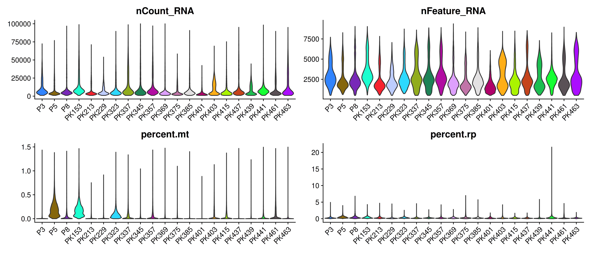
VlnPlot_scCustom(DCM_RV, features=c("nCount_RNA", "nFeature_RNA", "percent.mt", "percent.rp"), group.by="Batch_processing", num_columns=2, pt.size = 0, colors_use = batch_cols) & theme(axis.title.x = element_blank())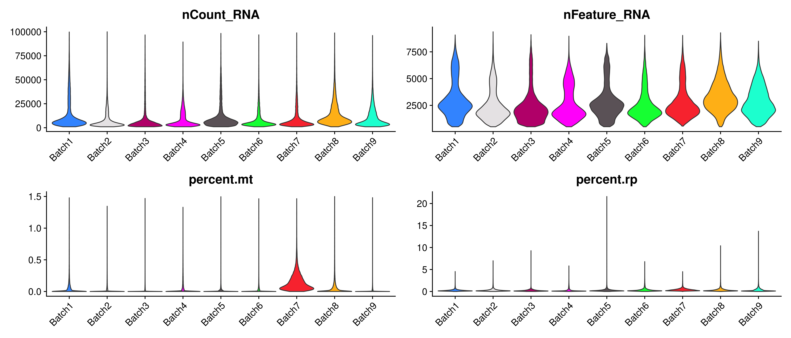
VlnPlot_scCustom(DCM_RV, features=c("nCount_RNA", "nFeature_RNA", "percent.mt", "percent.rp"), group.by="cell_type", num_columns=2, pt.size = 0, colors_use = cell_type_cols) & theme(axis.title.x = element_blank())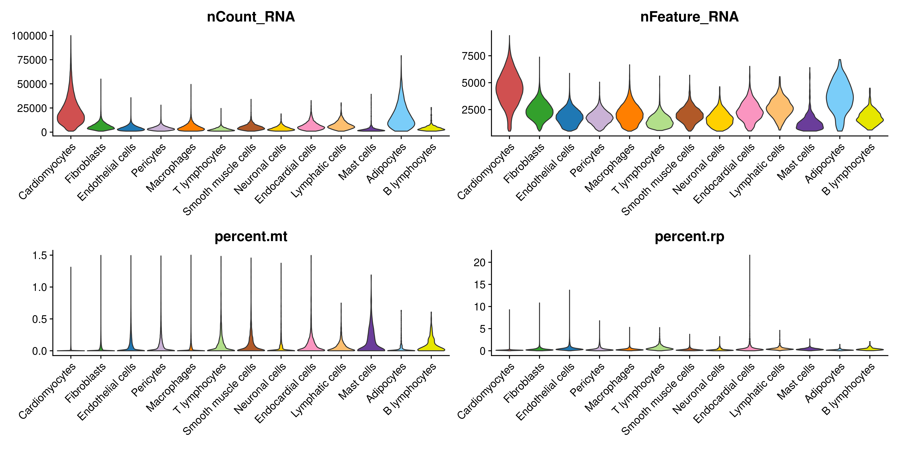
DimPlot_scCustom(DCM_RV, group.by = "SCT_snn_res.0.2", colors_use = cluster_cols)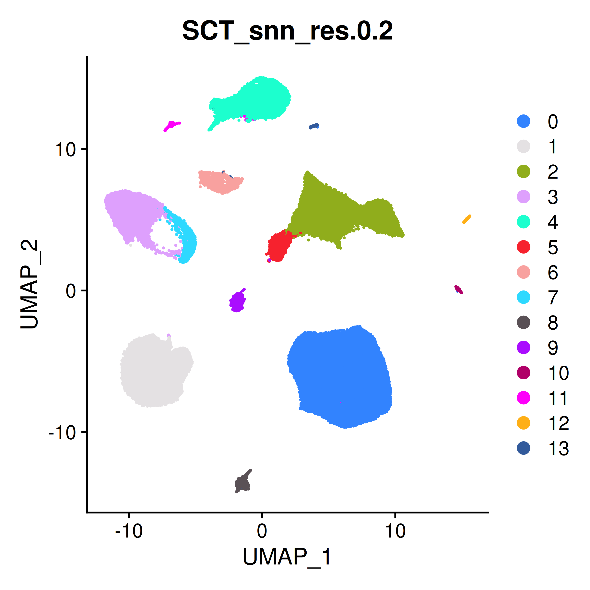
DimPlot_scCustom(DCM_RV, group.by = "Sample", colors_use = sample_cols)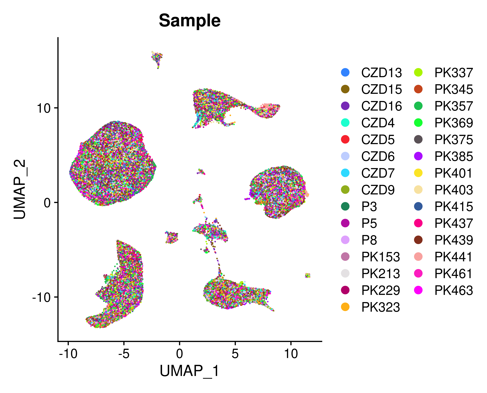
DimPlot_scCustom(DCM_RV, group.by = "Batch_processing", colors_use = batch_cols)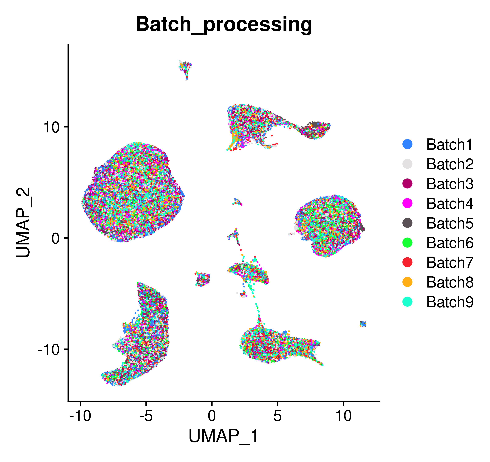
DefaultAssay(DCM_RV) <- "RNA"
Idents(DCM_RV) <- "cell_type"
Markers <- FindAllMarkers(DCM_RV, only.pos = TRUE, min.pct = 0.5, logfc.threshold = 1)
write.csv(Markers, here::here(output_dir_data, "DCM_RV_Markers_all_cell_type.csv"))
Markers_top10 <- as.data.frame(Markers %>% group_by(cluster) %>% top_n(n = 10, wt = avg_log2FC))
write.csv(Markers_top10, here::here(output_dir_data, "DCM_RV_Markers_top10_cell_type.csv"))
Markers_top3 <- as.data.frame(Markers %>% group_by(cluster) %>% top_n(n = 3, wt = avg_log2FC))
write.csv(Markers_top3, here::here(output_dir_data, "DCM_RV_Markers_top3_cell_type.csv"))genes.use <- intersect(
Markers_top10$gene,
rownames(DCM_RV[["SCT"]]@scale.data)
)
DefaultAssay(DCM_RV) <- "SCT"
Heatmap <- DoHeatmap(subset(DCM_RV, cells = sample(colnames(DCM_RV), 10000)),
features = genes.use,
label = FALSE,
draw.line = TRUE,
group.by = "cell_type",
group.colors = cell_type_cols,
lines.width = 1) +
scale_fill_gradientn(colours = heatmap_cols) +
theme(text = element_text(size = 15),
axis.text.y = element_text(size = 6))
Heatmap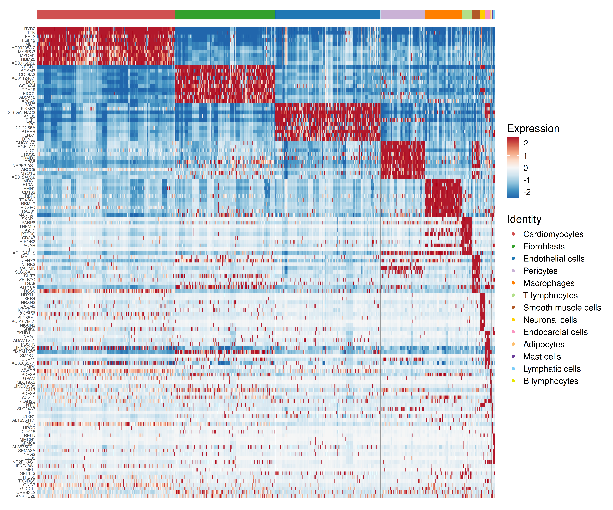
p <- DimPlot(DCM_RV, group.by = "cell_type", reduction = "umap", label = F) +
NoLegend() +
theme(axis.text=element_text(size=10, face = "bold"), axis.title = element_text(size = 14, face = "bold")) +
theme(plot.title = element_blank())
LabelClusters(p, id = "cell_type", fontface = "bold", size = 5, repel = T)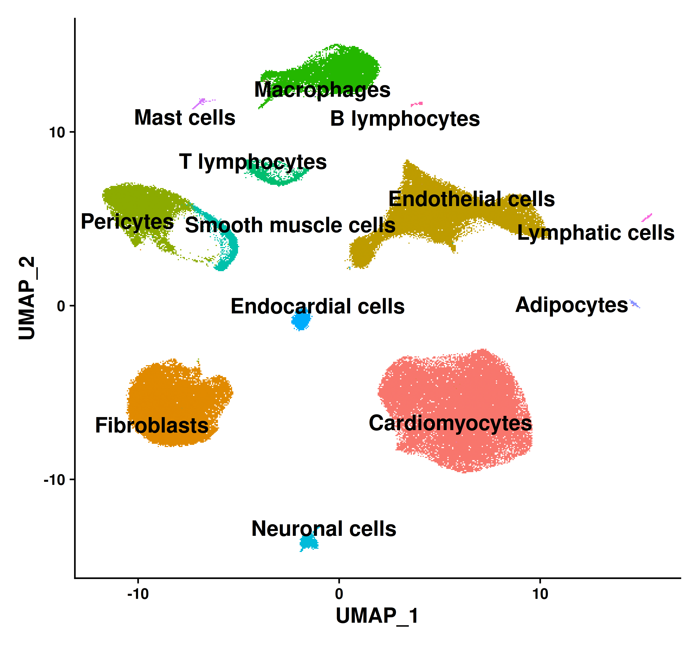
p <- DimPlot(
DCM_RV,
group.by = "cell_type",
reduction = "umap",
cols = cell_type_cols,
label = FALSE,
shuffle=T,
pt.size = 1.2
) +
NoLegend() +
theme(axis.text = element_text(size = 8, face = "bold"),
axis.title = element_text(size = 12, face = "bold"),
plot.title = element_blank())
LabelClusters(p,
id = "cell_type",
fontface = "bold",
size = 5.8,
repel = TRUE)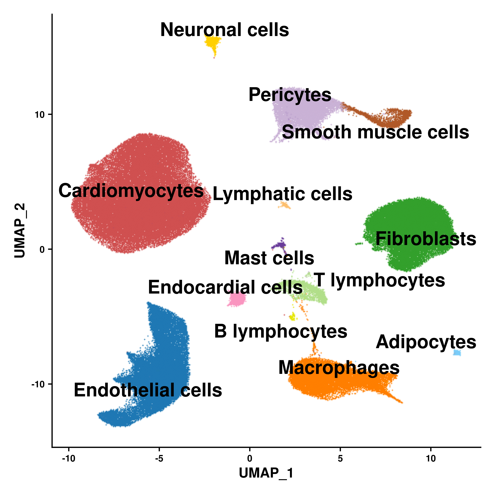
Markers_top3 <- Markers_top3[-c(34),]
Idents(DCM_RV) <- factor(
Idents(DCM_RV),
levels = rev(levels(Idents(DCM_RV)))
)
p <- DotPlot_scCustom(
DCM_RV,
features = Markers_top3$gene,
x_lab_rotate = TRUE
)
p + theme(
axis.text.x = element_text(size = 12,
angle = 60,
vjust = 1,
hjust = 1),
axis.text.y = element_text(size = 15)) 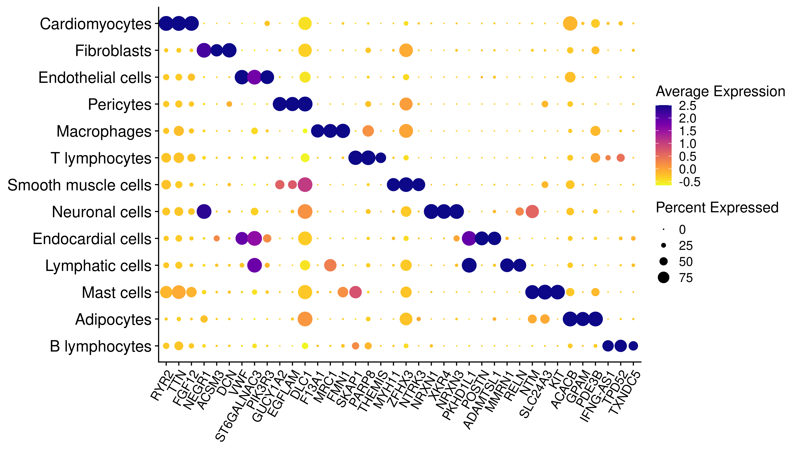
FeaturePlot_scCustom(DCM_RV, features = c("RYR2", "COL6A3", "VWF", "RGS5", "MRC1", "PTPRC", "RGS6", "NRXN1", "PKHD1L1", "ADIPOQ", "IL18R1", "MMRN1", "POU2AF1"), num_columns = 5, order = F)
props <- getTransformedProps(DCM_RV$cell_type, DCM_RV$Sample, transform="logit")
par(mar = c(7, 5, 1, 20), xpd = TRUE)
barplot(props$Proportions, legend = FALSE, ylab = "Proportions", col = cell_type_cols,
cex.names = 1.8, las = 2, font.lab = 2, font.axis = 2, cex.axis = 1.2, cex.lab = 2)
legend("topright", inset = c(-0.375, -0.065), legend = rownames(props$Proportions), fill = cell_type_cols, bty = "n", cex = 2)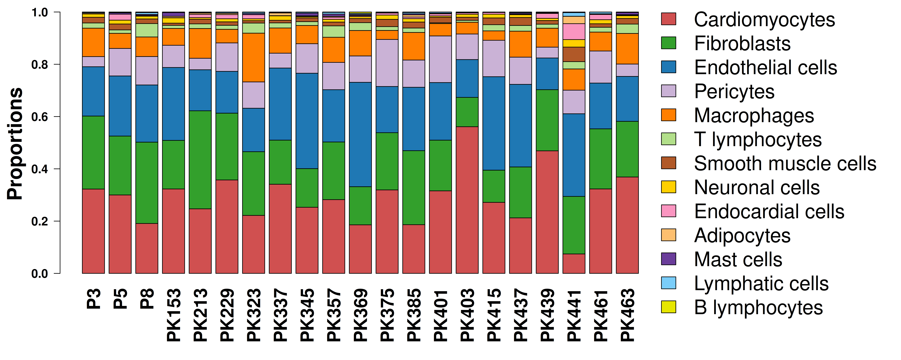
props <- getTransformedProps(DCM_RV$Sample, DCM_RV$cell_type, transform="logit")
par(mar = c(13, 5, 1, 14), xpd = TRUE)
barplot(props$Proportions, legend = FALSE, ylab = "Proportions", col = sample_cols,
cex.names = 1.4, las = 2, font.lab = 2, font.axis = 2, cex.axis = 1, cex.lab = 1.4)
legend("topright", inset = c(-0.31, -0.065), legend = rownames(props$Proportions), fill = sample_cols, bty = "n", cex = 1.4, ncol = 2)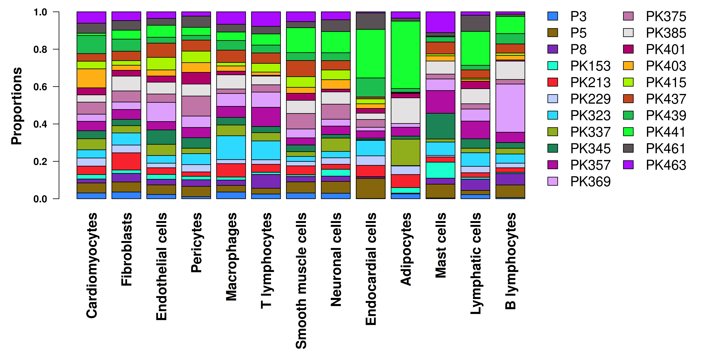
dim(DCM_RV)[1] 30376 136769table(DCM_RV$cell_type)
Cardiomyocytes Fibroblasts Endothelial cells Pericytes
39752 29678 31768 13504
Macrophages T lymphocytes Smooth muscle cells Neuronal cells
11539 3020 2695 1639
Endocardial cells Adipocytes Mast cells Lymphatic cells
1512 502 501 496
B lymphocytes
163 saveRDS(DCM_RV,
here::here(output_dir_data, "DCM_RV.rds"))qs_save(DCM_RV,
file = here::here(output_dir_data, "DCM_RV.qs2"),
nthreads = 32
)DCM_RV_RNA <- DCM_RV
DCM_RV_RNA@assays[["SCT"]] <- NULL
DefaultAssay(DCM_RV_RNA) <- "RNA"
qs_save(DCM_RV_RNA,
file = here::here(output_dir_data, "DCM_RV_RNA.qs2"),
nthreads = 32
)
rm(DCM_RV_RNA)
sessionInfo()R version 4.5.2 (2025-10-31)
Platform: x86_64-pc-linux-gnu
Running under: Ubuntu 24.04.3 LTS
Matrix products: default
BLAS: /usr/lib/x86_64-linux-gnu/openblas-pthread/libblas.so.3
LAPACK: /usr/lib/x86_64-linux-gnu/openblas-pthread/libopenblasp-r0.3.26.so; LAPACK version 3.12.0
locale:
[1] LC_CTYPE=en_US.UTF-8 LC_NUMERIC=C
[3] LC_TIME=en_US.UTF-8 LC_COLLATE=en_US.UTF-8
[5] LC_MONETARY=en_US.UTF-8 LC_MESSAGES=en_US.UTF-8
[7] LC_PAPER=en_US.UTF-8 LC_NAME=C
[9] LC_ADDRESS=C LC_TELEPHONE=C
[11] LC_MEASUREMENT=en_US.UTF-8 LC_IDENTIFICATION=C
time zone: Etc/UTC
tzcode source: system (glibc)
attached base packages:
[1] stats4 stats graphics grDevices datasets utils methods
[8] base
other attached packages:
[1] future_1.68.0 speckle_1.10.0
[3] harmony_1.2.4 Rcpp_1.1.0
[5] clustree_0.5.1 ggraph_2.2.2
[7] statmod_1.5.1 patchwork_1.3.2
[9] scater_1.38.0 scuttle_1.20.0
[11] Matrix.utils_0.9.7 RColorBrewer_1.1-3
[13] scales_1.4.0 knitr_1.50
[15] gridExtra_2.3 png_0.1-8
[17] pheatmap_1.0.13 reshape2_1.4.5
[19] lubridate_1.9.4 forcats_1.0.1
[21] stringr_1.6.0 purrr_1.2.0
[23] tidyr_1.3.1 tibble_3.3.0
[25] tidyverse_2.0.0 magrittr_2.0.4
[27] ggplot2_4.0.1 dplyr_1.1.4
[29] scCustomize_3.2.2 scDblFinder_1.24.0
[31] Matrix_1.6-5 DropletUtils_1.30.0
[33] SingleCellExperiment_1.32.0 SummarizedExperiment_1.40.0
[35] Biobase_2.70.0 GenomicRanges_1.62.0
[37] Seqinfo_1.0.0 IRanges_2.44.0
[39] S4Vectors_0.48.0 BiocGenerics_0.56.0
[41] generics_0.1.4 MatrixGenerics_1.22.0
[43] matrixStats_1.5.0 SeuratObject_5.0.2
[45] Seurat_4.4.0 readxl_1.4.5
[47] readr_2.1.6 here_1.0.2
loaded via a namespace (and not attached):
[1] fs_1.6.6 spatstat.sparse_3.1-0
[3] bitops_1.0-9 httr_1.4.7
[5] backports_1.5.0 tools_4.5.2
[7] sctransform_0.4.2 utf8_1.2.6
[9] R6_2.6.1 HDF5Array_1.38.0
[11] lazyeval_0.2.2 uwot_0.2.4
[13] rhdf5filters_1.22.0 withr_3.0.2
[15] sp_2.2-0 progressr_0.18.0
[17] cli_3.6.5 spatstat.explore_3.6-0
[19] prismatic_1.1.2 labeling_0.4.3
[21] sass_0.4.10 S7_0.2.1
[23] spatstat.data_3.1-9 ggridges_0.5.7
[25] pbapply_1.7-4 Rsamtools_2.26.0
[27] R.utils_2.13.0 parallelly_1.45.1
[29] limma_3.66.0 rstudioapi_0.17.1
[31] shape_1.4.6.1 BiocIO_1.20.0
[33] ica_1.0-3 spatstat.random_3.4-3
[35] ggbeeswarm_0.7.3 abind_1.4-8
[37] R.methodsS3_1.8.2 lifecycle_1.0.4
[39] whisker_0.4.1 yaml_2.3.11
[41] edgeR_4.8.0 snakecase_0.11.1
[43] glmGamPoi_1.22.0 rhdf5_2.54.0
[45] SparseArray_1.10.4 Rtsne_0.17
[47] paletteer_1.6.0 grid_4.5.2
[49] promises_1.5.0 dqrng_0.4.1
[51] crayon_1.5.3 miniUI_0.1.2
[53] lattice_0.22-7 beachmat_2.26.0
[55] cowplot_1.2.0 cigarillo_1.0.0
[57] pillar_1.11.1 metapod_1.18.0
[59] rjson_0.2.23 xgboost_3.1.2.1
[61] future.apply_1.20.0 codetools_0.2-20
[63] leiden_0.4.3.1 glue_1.8.0
[65] spatstat.univar_3.1-5 data.table_1.17.8
[67] vctrs_0.6.5 spam_2.11-1
[69] cellranger_1.1.0 gtable_0.3.6
[71] rematch2_2.1.2 cachem_1.1.0
[73] xfun_0.56 S4Arrays_1.10.1
[75] mime_0.13 tidygraph_1.3.1
[77] survival_3.8-3 bluster_1.20.0
[79] fitdistrplus_1.2-4 ROCR_1.0-11
[81] nlme_3.1-168 bit64_4.6.0-1
[83] RcppAnnoy_0.0.22 GenomeInfoDb_1.46.1
[85] rprojroot_2.1.1 bslib_0.9.0
[87] irlba_2.3.5.1 vipor_0.4.7
[89] KernSmooth_2.23-26 otel_0.2.0
[91] colorspace_2.1-2 ggrastr_1.0.2
[93] tidyselect_1.2.1 bit_4.6.0
[95] compiler_4.5.2 curl_7.0.0
[97] git2r_0.36.2 BiocNeighbors_2.4.0
[99] hdf5r_1.3.12 h5mread_1.2.1
[101] DelayedArray_0.36.0 plotly_4.11.0
[103] rtracklayer_1.70.0 checkmate_2.3.3
[105] lmtest_0.9-40 digest_0.6.39
[107] goftest_1.2-3 spatstat.utils_3.2-0
[109] rmarkdown_2.30 RhpcBLASctl_0.23-42
[111] XVector_0.50.0 htmltools_0.5.9
[113] pkgconfig_2.0.3 sparseMatrixStats_1.22.0
[115] fastmap_1.2.0 rlang_1.1.6
[117] GlobalOptions_0.1.3 htmlwidgets_1.6.4
[119] UCSC.utils_1.6.0 shiny_1.12.0
[121] DelayedMatrixStats_1.32.0 farver_2.1.2
[123] jquerylib_0.1.4 zoo_1.8-14
[125] jsonlite_2.0.0 BiocParallel_1.44.0
[127] R.oo_1.27.1 BiocSingular_1.26.1
[129] RCurl_1.98-1.17 dotCall64_1.2
[131] Rhdf5lib_1.32.0 viridis_0.6.5
[133] reticulate_1.44.1 stringi_1.8.7
[135] MASS_7.3-65 plyr_1.8.9
[137] parallel_4.5.2 listenv_0.10.0
[139] ggrepel_0.9.6 deldir_2.0-4
[141] graphlayouts_1.2.2 Biostrings_2.78.0
[143] splines_4.5.2 tensor_1.5.1
[145] hms_1.1.4 circlize_0.4.16
[147] locfit_1.5-9.12 igraph_2.2.1
[149] spatstat.geom_3.6-1 ScaledMatrix_1.18.0
[151] XML_3.99-0.20 evaluate_1.0.5
[153] scran_1.38.0 renv_1.1.5
[155] BiocManager_1.30.27 ggprism_1.0.7
[157] tweenr_2.0.3 tzdb_0.5.0
[159] httpuv_1.6.16 grr_0.9.5
[161] RANN_2.6.2 polyclip_1.10-7
[163] scattermore_1.2 ggforce_0.5.0
[165] rsvd_1.0.5 janitor_2.2.1
[167] xtable_1.8-4 restfulr_0.0.16
[169] RSpectra_0.16-2 later_1.4.4
[171] viridisLite_0.4.2 memoise_2.0.1
[173] beeswarm_0.4.0 GenomicAlignments_1.46.0
[175] cluster_2.1.8.1 workflowr_1.7.2
[177] timechange_0.3.0 globals_0.18.0